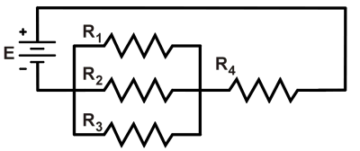
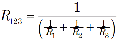
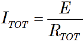
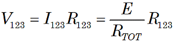
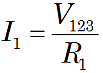
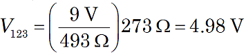
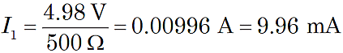

|
 Figure 1. Series-parallel resistors. |
In circuits that have resistors connected in both series and parallel, consider the circuit as combinations of parallel parts and the series parts.
Use resistance formulas to determine the total resistances of the series and parallel parts. Then, use Ohm's Law to calculate the voltage drops across and currents through each part.
In the circuit of Figure 1, first use the parallel resistance formula to find the equivalent resistance R123.

Then the series resistance formula tells us RTOT = R123 + R4. So, Ohm's Law gives the total circuit current:

ITOT equals both the current I4 though R4, and the current I123 entering/exiting the parallel part. Using Ohm's Law:

So, knowing the value of V123, again apply Ohm's Law to find the current I1 through the parallel resistor R1:

and similarly for I2 and I3.
For example, given the circuit in Figure 1, suppose E = 9 V, R1 = 500 Ω, R2 = 1.0 kΩ, R3 = 1.5 kΩ, and R4 = 220 Ω. Then R123 = 273 Ω, and RTOT = 493 Ω, so

and thus

And similarly for I2 and I3.
Note: It is important to carefully handle units with metric prefixes. Above, we adjusted the decimal point and units so that our formula for current yielded volts/ohms = amperes. With careful attention to the prefixes and decimal points, some folks can use shortcuts like volts/kilohms = milliamperes, millivolts/ohms = millivolts, and so forth.